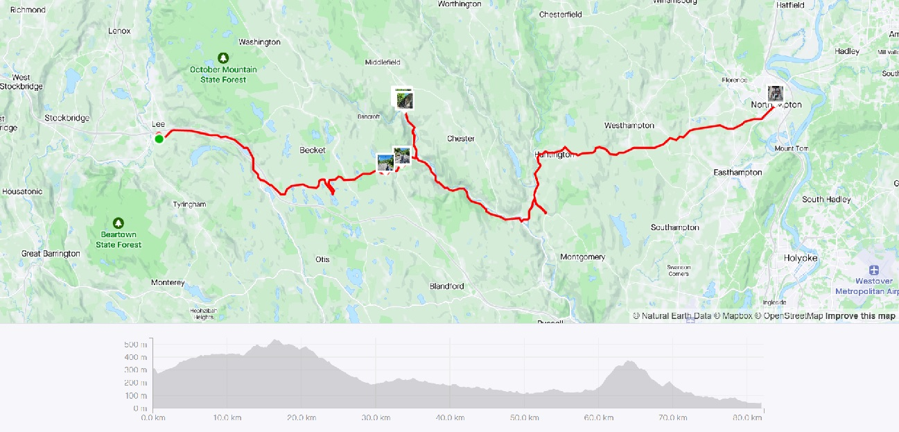
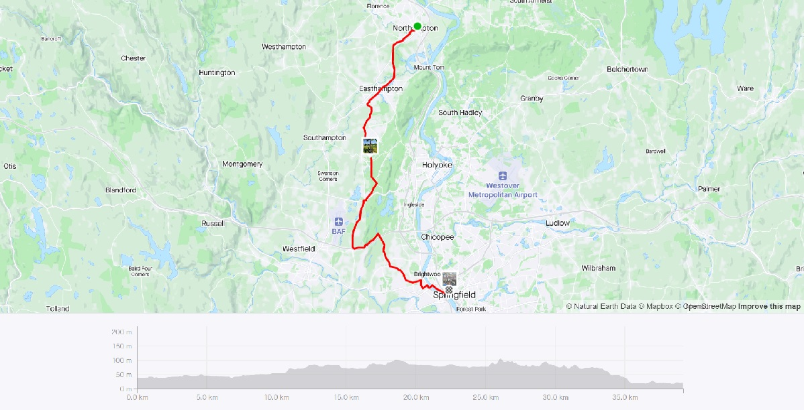
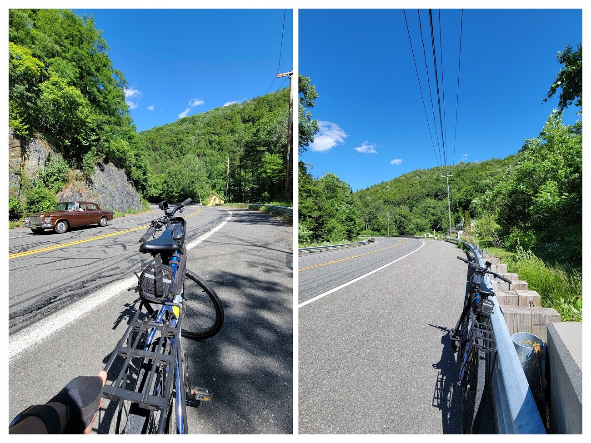
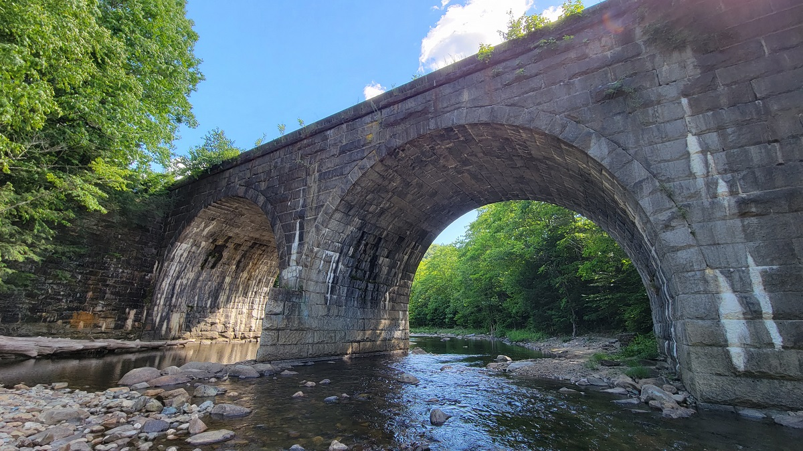
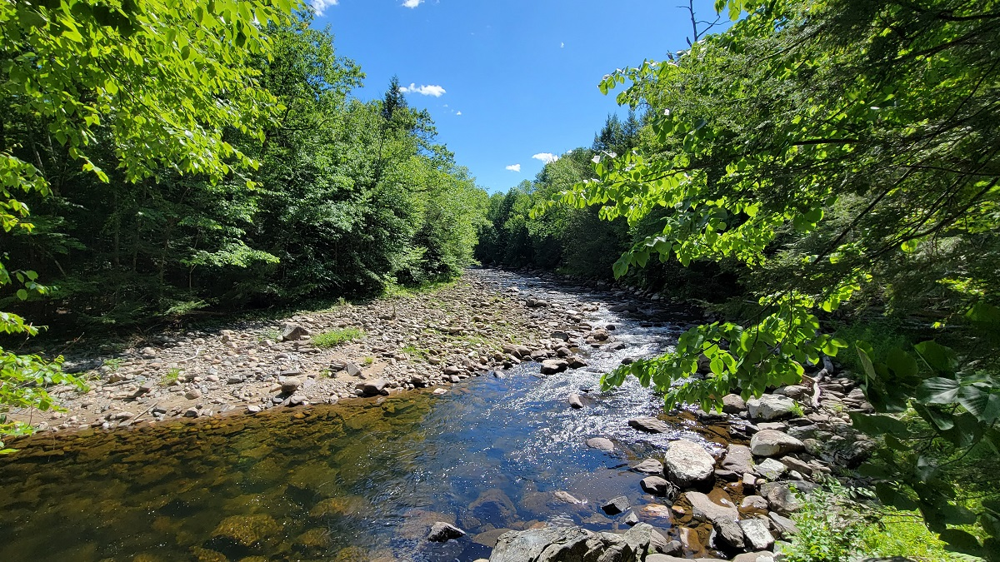
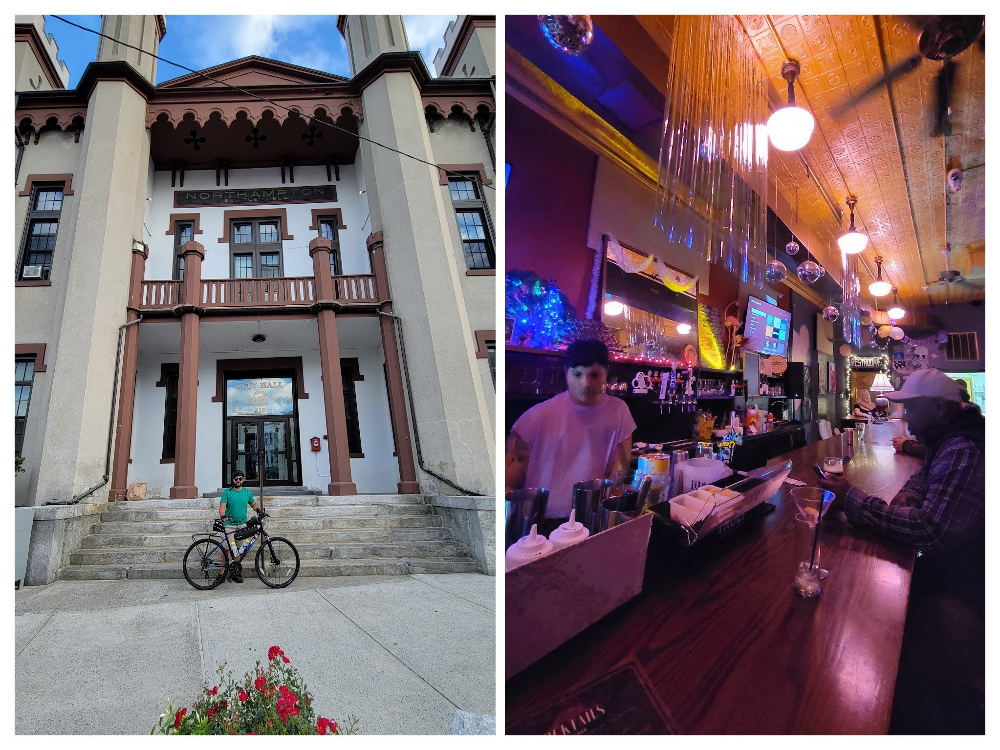
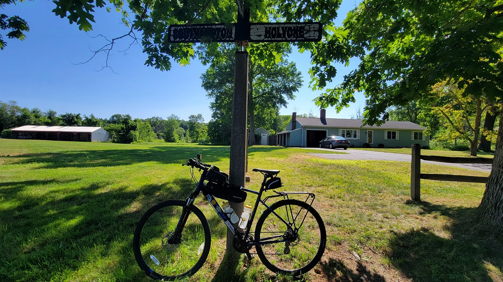
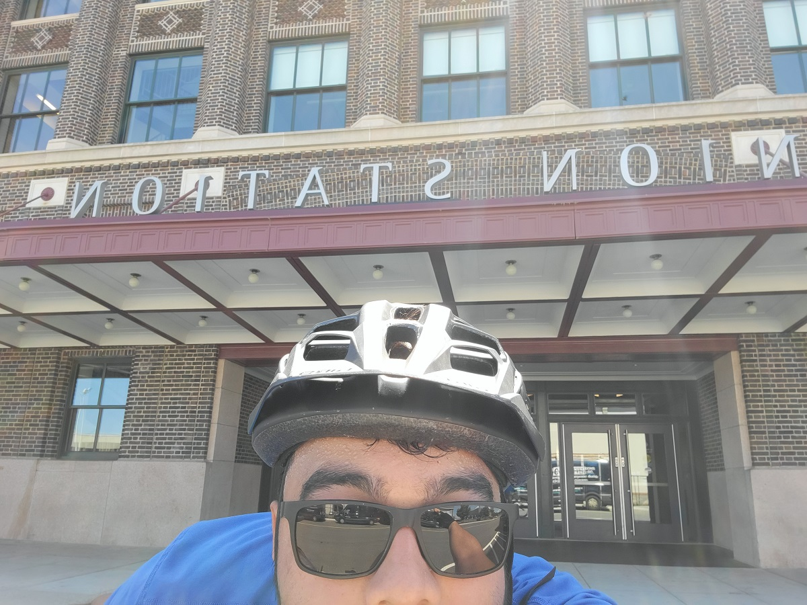

Berkshire Blaster 2.0
Covering the Southern part of the Berkshire hills
Ride With GPS Links
Day 1 - Lee to Northampton
Day 2 - Northampton to Springfield
I both enjoy, and dread a cross-Berkshire hills ride. The roads and views are fantastic, as are the downhills, but the uphill portions can be dreadful. Generally speaking, going from west to east incurs lower uphill climbs, as the Berkshire valley is higher in elevation than the Pioneer valley. However, as I am limited on transportation options, finding easy transportation to towns in the Berkshire valley is difficult and time-consuming. For this ride, I took (yes, of course) a PeterPan bus from Boston to Lee, and after sun-screening myself, I started around 1:50pm. Thankfully, it was near peak summer with long daylight hours, and even though it took me 5 1/2 hours, it was still light outside.
 Strava Route Day 1 - Lee to Northampton
 Strava Route Day 2 - Northampton to Springfield
While I am relatively beholden to Peterpan, it’s a shame that Amtrak does not permit bikes on board their train from Boston to Pittsfield. If booked in time, these tickets are only $9 and are so much more in reach than an expensive Peterpan bus.
Lee to Northampton
The bus dropped me off at Lee Premium Outlets. A monument to luxury shopping, and excess, I was wearing padded shorts, a helmet, and layering on sunscreen, getting ready for my ride! From Lee, I took Route 20 West - the portion in Chester was winding, with steep walls rock faces along the road.
 Route 20 West winding along the Westfield River
Before continuing on from Chester, I took a small diversion towards the Keystone Arch Bridges. These are a series of stone arched railway bridges spanning across the Westfield river which are still used by Amtrak trains, on the route connecting Chicago & Boston. It’s a quiet, and serene location, relatively off the beatent track, but still had a few visitors when I was there.
 Keystone Arch Bridges
 Westfield River
I finally arrived in Northampton around 7:15pm, extremely glad that it was the summer, and still light out. I was definitely exhausted. I found a really nice bar very close to my Airbnb, called The Majestic Saloon.
 Northampton City Hall, and The Majestic Saloon
Northampton to Springfield
A relatively calmer day for a ride, I had a bus from Springfield to Boston at 11:00 am. It a flat 24 mile ride, so I gave it 2 hours, and left Northampton at 8:45am.
 Town line marker between Southampton and Holyoke
 Made it to Springfield Union Station!
Overall, I covered 13 new towns - Lee, Becket, Chester, Middlefield, Huntington, Montgomery, Westhampton, Easthampton, Southampton, Holyoke, Westfield, West Springfield, Springfield - bringing the total to 180/351. This covers 51.3% - over half of all towns!
Lee to Springfield